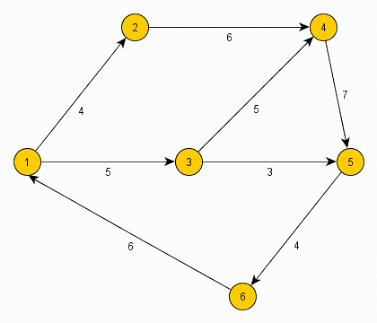
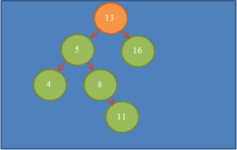
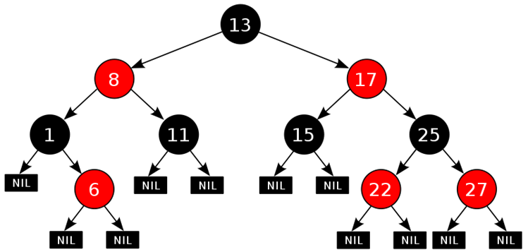

Коллекции
Коллекция — это объект, содержащий в себе набор значений одного или различных типов, и позволяющий обращаться к этим значениям.
Назначение коллекции — служить хранилищем объектов и обеспечивать доступ к ним. Обычно коллекции используются для хранения групп однотипных объектов, подлежащих стереотипной обработке. Для обращения к конкретному элементу коллекции могут использоваться различные методы, в зависимости от её логической организации. Реализация может допускать выполнение отдельных операций над коллекциями в целом. Наличие операций над коллекциями во многих случаях может существенно упростить программирование.
List
Интерфейс List – представляет собой усовершенствованный массив, который можно динамически менять в рамерах, то есть добавлять или удалять элементы. List имеет две реализации ArrayList и LinkedList.
ArrayList представляет собой массив, начальной длинны 10 ячеек. При добавлении 11-го элемента в ArrayList, массив из 10 элементов будет скопирован в новый массив, увеличенный в 1,5 раза +1 элемент. И такое увеличение массиива будет происходить всегда при его переполнении. При удалении каких то ячеек массив будет перезаписывать аналогичным образом. Все эти операции происходят незаметно для пользователя внешне, но занимают сравнительно много времени. Зато поиск по ArrayList’у осузествляется очень быстро (с константной скоростью) так как поиск идет по индксу элемента.
LinkedList представляет собой связный список, то есть каждый объект представляет собой объектс данными и ссылку на следующий элемент. Такой подход дает приемущества при вставке или удалению элемента в середине массива, потому что на новый объект просто нужно добавить ссылку в связанном скиске. Но поиск по такому массиву будет затруднен (О(n) – линейная сложность поиска), в то время когда поиск по Arralist будет проходить за константное время (О(1)).
Set
Интерфейс Set предназначен для хранения множества неповторяющихся объектов одного типа. Set имеет 3 реализации это HashSet, LinkedHashSet, и TreeSet.
В множествах Set каждый элемент хранится только в одном экземпляре, а разные реализации Set используют разный порядок хранения элементов. В HashSet порядок элементов определяется по сложному алгоритму. Если порядок хранения для вас важен, используйте контейнер TreeSet, в котором объекты хранятся отсортированными по возрастанию в порядке сравнения или LinkedHashSet с хранением элементов в порядке добавления.
Множества часто используются для проверки принадлежности, чтобы вы могли легко проверить, принадлежить ли объект заданному множеству, поэтому на практике обычно выбирается реализация HashSet, оптимизированная для быстрого поиска.
Queue
Queue - коллекция, предназначенная для хранения элементов в порядке, нужном для их обработки. В дополнение к базовым операциям интерфейса Collection, очередь предоставляет дополнительные операции вставки, получения и контроля. Имеет 2 реализации ArrayDeque и PriorityQueue.
В PriorityQueue происходит все по правилу first-in-first-out, то есть все как в очереди за колбасой.
В ArrayDeque наоборот, как в стопке тетрадей, last-in-first-out.
Map
Map – структура данных в которой запись данных организована по принципу ключ-значение. Примером может служить телефонная книга «Имя - номер телефона». Map имеет 2 реализации HashMap и TreeMap.
HashMap представляет собой массив, элементами которого являются связные списки, Объектом связного списка являются пары ключ-значение. Функция хэширования, определяет индекс массива по хэшкоду ключа, и записывает пару в ячейку если происходит коллизия добавляет пару в связанный список этой ячейки.
TreeMap организована на красно-черном дереве и соответственно хранит данные в отсортированном виде.
Iterator
Итератор – это специальный объект позволяющий просматривать все элементы коллекции. Конечно в случае list мы можем воспользоваться циклом for для послледовательного доступа ко всем элементам, но вот в других элементах коллекции типа Set, for нам нем поможет.
ForEach - это специальный синтаксис для удобного перебора каждого элемента коллекции, представляющий собой упрощенную запись итератора.
Графы и деревья
Граф – это система, состоящая из точек и линий которые их соединяют. Точки называют вершины графа, а линии – ребра. Граф удобно использовать как математическую модель для различных задач.
Дерево – это связанный граф, без циклов и петель. Бинарное дерево – это дерево у каждой вершины которого есть не более двух потомков. Деревья легко хранят в себе информацию в отсортированном виде.
Но зачастую одна из веток дерева может сильно вырастать относительно других, и по такому дереву сложность поиска увеличивается. Чтобы деревья были сбалансированными, то есть ветки которых были бы равны, придумали красночерные деревья. Которые помимо сравнения вершин, еще хранят цвет, который учавствует в балансировке.
